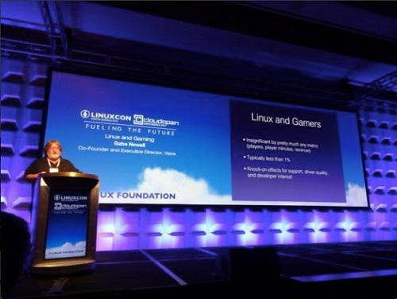

Valve 加入 Linux 基金會

◎本文原載 Linux Pilot，原文章連結按此。
一直以來要在電腦上玩遊戲，使用 Windows 是唯一的選擇。但隨著遊戲開發商 Valve Software 宣佈加入 Linux 基金會，未來有部分遊戲都可以在 Linux 平台上執行。

2013 年 9 月，Valve 就表示將推出以 Linux 為基礎開發的開源遊戲系統 SteamOS，Valve 成為 Linux 基金會的銀鑽會員後，每年將向基金會捐贈 5 千到 2 萬美元贊助費，以換取 Linux 基金會聘請社群的工程師，投入更多資源改良 Linux 在硬體方面的支援和執行效率，將 Linux 打造成 Windows 以外的另一個遊戲平台。截至目前為止，Valve 的 Steam 客戶端上已經有 200 多款遊戲運行在 Linux 平台上。Valve 的開發員 Drew Bliss 也表示 Linux 與微軟的 Windows 8 相比，更適合作為一個遊戲平台。
根據 Valve 的用戶數據，目前 Windows 的遊戲玩家明顯高於 Linux 玩家。當前的做法是 Steam 平台的用戶必須先安裝 Steam 客戶端，這個客戶端可以在 Linux、Mac OS X 或 Windows 上安裝。透過平台線上訂購並取得付費遊戲序號後，便可下載以及安裝。於 2011 年 4 月 Steam 更加入了與 PlayStation 3 帳戶連結的功能，可以實現 Steam 帳戶與 PlayStation 3 帳戶連接，使其實現跨平台遊戲配對、對戰、好友系統、聊天和成就等。PS3 上的 Steam 也可以把合作模式遊戲進度和單人遊戲存檔保存在 Steam 雲端，使玩家可以在任意 PS3 主機上繼續他們之前的遊戲進度。
長久以來 Linux 無法取代 Windows 的其中一個原因，是 Linux 無法玩在 Windows 上的熱門遊戲。從前在 PC 上玩遊戲的骨灰級玩家都會認同，當時為了玩某個遊戲，總會在電腦做一些特別的設定，對軟體和硬體的認識也是這樣建立起來的。能在 Linux 上玩遊戲，絕對是吸引人更多人學習 Linux 的動力。